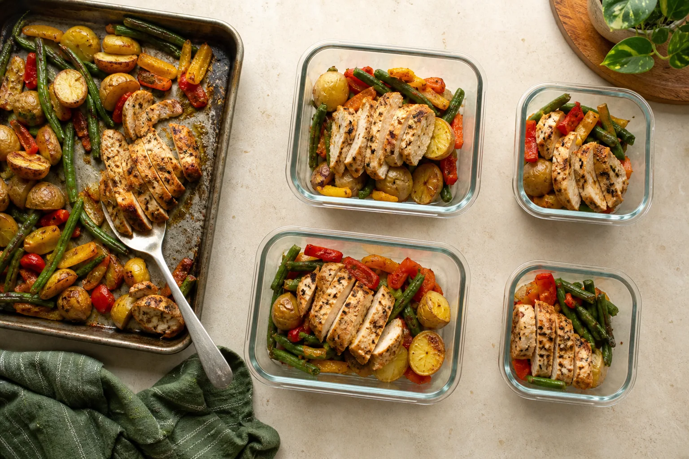

Focused, practical education
Nutrition guides: macros, calories and food labels
Learn how protein, carbs, fat, portions and food labels connect to macro goals and real restaurant decisions. The library is curated around the GetMacros product—not every possible health topic.

Journal
Which fast-food restaurant fits your goal?
Compare fast-food restaurants for high protein, cutting, bulking, fiber and plant-based meals using complete orders and visible nutrition trade-offs.
How much protein can your body absorb at once?
Your body does not waste protein after 30 grams. Learn the difference between protein absorption, muscle protein synthesis and practical meal distribution.
Are diet drinks bad for you?
Are diet drinks bad for you? Separate sweetener safety, weight-control evidence and practical drink choices without treating every can as good or bad.
Does creatine cause hair loss?
Does creatine cause hair loss? See what the 2009 DHT study found, what the 2025 hair-follicle trial added and what remains uncertain.
Calories vs. macros: what matters more?
Calories vs. macros: learn which matters for weight change, muscle, fullness and performance—and how to set priorities without tracking everything.
Macros and goals
What does protein do in your body?
What protein does in the body, how much you need for muscle building and repair, and the signs of protein deficiency — with cited sources.
What do carbs do in your body?
How carbohydrates fuel your body and brain, how glycogen storage works, and what happens on very low-carb diets — with cited sources.
What does fat do in your body?
What dietary fat does for hormones, cell membranes, and vitamin absorption, how much you need, and the signs of getting too little — with cited sources.
How much protein do you need per day?
How much protein you actually need per day for baseline health, general fitness, and muscle building, based on RDA and sports nutrition research.
How to calculate your macros by hand
A step-by-step walkthrough of the exact math behind a macro calculator — useful for nutrition students who need to show their work.
How to set your macros for fat loss
A practical framework for setting protein, fat, and carb targets during a fat-loss phase, including why protein should go up, not down.
How to set your macros for building muscle
A practical framework for setting protein, fat and carb targets to build muscle while minimising unnecessary fat gain, with example numbers you can copy.
Cutting vs. bulking vs. maintenance: which phase are you in?
What the terms cutting, bulking, and maintenance actually mean in terms of calories and macros, and how to tell which one you should be doing.
Body recomposition: building muscle and losing fat at once
What body recomposition means, who it actually works for, how to set protein and calories for it, and how long to expect it to take before you judge results.
How many calories should I eat a day?
Work out your daily calorie target from your body size, activity and goal, see the maths behind it, and learn why the number is an estimate to adjust.
What are macros, in plain English?
What macronutrients are, what protein, carbohydrate and fat each do, how many calories each provides, and how to set a split without weighing every meal.
How to calculate maintenance calories
Calculate maintenance calories with a clear starting estimate, then use your weight trend to find the intake that actually maintains your weight.
What is a calorie deficit?
A calorie deficit means taking in less energy than you use over time. Learn how to estimate one, why weight loss slows and what to monitor.
Can you build muscle in a calorie deficit?
Muscle gain in a calorie deficit is possible for some people, but energy deficiency makes it harder. See who is most likely to progress and what matters.
When should you recalculate calories and macros?
Recalculate calories and macros after meaningful changes—not every scale fluctuation. Use weight trends, activity and performance to decide when.
Nutrients to watch
How much sodium per day, and why restaurant meals matter
The daily sodium limits health authorities set, how much a single restaurant meal can hold, and how to keep your total sensible without tracking milligrams.
How much fiber per day, and where to actually get it
The daily fiber target, why most people miss it, which foods close the gap fastest, and how to raise your intake without the discomfort that stops people.
Protein and food
25 high-protein foods, ranked by protein per calorie
25 high-protein foods ranked by protein per 100 g, protein per 100 calories and protein in a realistic serving, so you can compare them the way you eat them.
How to build a balanced meal with macros
Build a balanced meal with protein, carbohydrate, produce and satisfying fat—then adjust portions for cutting, maintenance or bulking.
Training and everyday eating
What to eat before a workout
What to eat before a workout, from a full meal to a quick snack. Choose carbs, protein and portion size based on timing and stomach comfort.
What to eat after a workout
Build a practical post-workout meal with protein, carbs and fluids. Learn when recovery timing matters and when your next normal meal is enough.
Why did I gain weight overnight?
An overnight scale increase is usually not a sudden change in body fat. Learn how food mass, fluid, sodium, carbs and digestion move daily weight.
How to hit your protein goal on a budget
Reach your protein goal on a budget by comparing cost per gram, choosing flexible staples and planning meals that use the whole package.
Should you eat the same calories on rest days?
You can keep calories the same on rest days or cycle them around training. Compare both approaches while keeping recovery and your weekly goal in view.
Labels and recipes
Serving size vs. portion size: the difference that changes the math
Learn why a label serving is not a recommended portion, how to scale nutrients to the amount you eat, and when dual-column labels help.
How to read a nutrition label (macros edition)
How to quickly find protein, fat, and carbohydrate info on a nutrition label, and the common mistakes people make reading serving sizes.
How to calculate nutrition for a homemade recipe
Calculate calories and macros for a homemade recipe using ingredient totals, cooked yield, and portion weight without confusing raw and cooked entries.